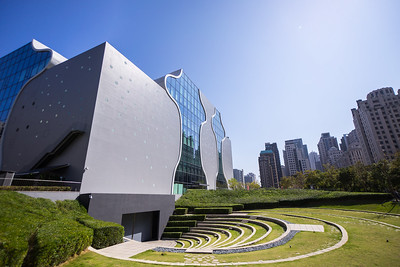
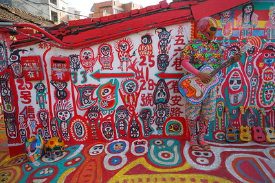
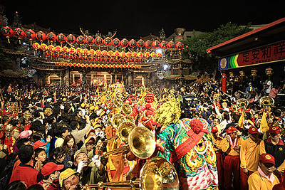
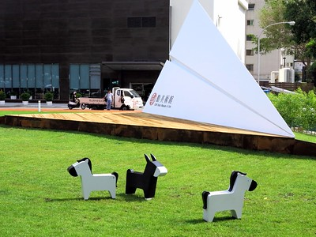

National Taichung Theater

The National Taichung Theater is an opera house that was planned on 2009 and finally opened in 2016. The architect, Toyo Ito, once said that if you see the entire world as a river, then I want my buildings to be like a whirlpool. Not only does the outside of the theater looks like a whirlpool, the inside of the building especially the stairs are really beautiful. Apart from the shows that are hold in the theater, they also have stands that sell manufactured artifacts.
Rainbow Village

The beginning of the Rainbow Village started out as a normal village. It started when a soldier, Huang Yung-Fu, began painting houses to prevent the village from demolition. Eventually, he had the help of local university students and campaigned to save the village. In the end, the authorities agreed to preserve the village. Nowadays it is a popular attraction for tourists.
Dajia Jenn Lann Temple

Dajia Jenn Lann Temple, also know as the Mazu Temple is a temple to the Chinese sea goddess Mazu. Every year around Lunar March there is this "Dajia Matsu Pilgrimage". Followers walk 9 days and 8 nights from Chiayi to Chunghua which is around 340 kilometers. People believe by doing so, their wishes can come true, hope for safety, thank the gods, and even atonement.
CMP Block Musuem of Arts

The design of CMP Block Musuem of Arts is based on the method to let art walk into our lives. Despite the name of Musuem, this museum has no walls. It is basically out under the sun and moon. The displaying objects will change according to the season. For example, the arts will be about Christmas when Christmas is near. This block was once an old street. Thanks to the effort of several teams, they successfully brought life to the area. Apart from art, there is a large lawn for people to walk around and shopping malls to hang out.